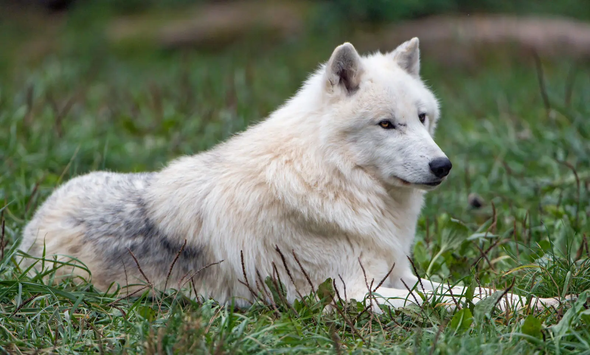

Arctic Wolf
Also known as white/polar wolf, are sub-species of polar wolves. They spend their lives in the Artic tundra. They are the only wolf in the world with their coloring, unique due to the environment where they live.
Scientific Name: Canis lupus arctos
Average Length: 105 - 160cm
Average Lifespan: 15 years
Habitat: Arctic regions of North America and Greenland
Due to its isolation, this wolf is not under threat by habitat destruction and hunting as its southern relatives are, and is the only wolf sub-species that is not threatened.